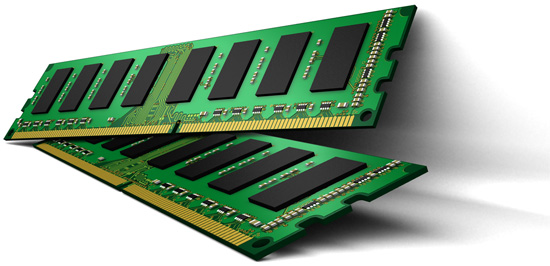

La memoria RAM, o memoria de acceso aleatorio, es un componente vital en cualquier dispositivo informático. Su función principal es almacenar temporalmente los datos y programas que la unidad central de procesamiento (CPU) necesita para ejecutar tareas en tiempo real. A diferencia del almacenamiento permanente, como los discos duros o SSD, la RAM es volátil, lo que significa que los datos se borran cuando se apaga el dispositivo.
Tipos de ram
Las tres formas principales de RAM moderna son:
SRAM (Static Random-Access Memory):
La SRAM es un tipo de memoria RAM que utiliza flip-flops para almacenar cada bit de datos. A diferencia de la DRAM, la SRAM no necesita ser refrescada constantemente, lo que la hace mucho más rápida. Sin embargo, esta tecnología es más costosa y consume más energía, por lo que se utiliza principalmente en aplicaciones donde la velocidad es crítica, como la memoria caché de la CPU. La SRAM es conocida por su alta velocidad y baja latencia, lo que la hace ideal para tareas que requieren acceso rápido a los datos.
DRAM (Dynamic Random-Access Memory):
La DRAM es el tipo de memoria RAM más común en los sistemas informáticos. Utiliza condensadores para almacenar cada bit de datos, lo que la hace más económica y con mayor densidad que la SRAM. Sin embargo, los condensadores pierden su carga con el tiempo, por lo que la DRAM necesita ser refrescada constantemente para mantener los datos. Esta necesidad de refresco la hace más lenta que la SRAM, pero su menor costo y mayor capacidad la hacen ideal para la memoria principal de los ordenadores. La DRAM ha evolucionado a través de varias generaciones, como DDR, DDR2, DDR3, DDR4 y DDR5, cada una ofreciendo mejoras en velocidad y eficiencia.
VRAM (Video Random-Access Memory):
La VRAM es un tipo de memoria RAM diseñada específicamente para las tarjetas gráficas. Su función principal es almacenar los datos de imagen que se van a mostrar en la pantalla. La VRAM permite a la GPU (unidad de procesamiento gráfico) acceder rápidamente a los datos de imagen, lo que mejora el rendimiento gráfico en aplicaciones como videojuegos y software de diseño 3D. Al igual que la DRAM, la VRAM ha evolucionado a través de varias generaciones, como GDDR (Graphics Double Data Rate), con cada nueva generación ofreciendo mayor ancho de banda y velocidad. La cantidad y la velocidad de la VRAM son factores importantes en el rendimiento de una tarjeta gráfica.